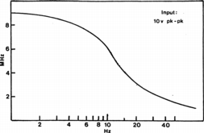
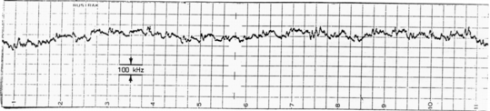

LABORATORY FOR
SCIENCE
2821 9th Street
Berkeley, CA. 94710
Tel (510) 644-0224
MODEL 200
ULTRA-STABLE LASER
General Performance:
The Model 200 offers the most economical solution to a wide variety of problems that require a single frequency laser beam, and especially those where the requirements call for very low noise and/or very high frequency stability. Under conditions of no retroreflection and no vibration and acoustic noise, amplitude noise is down to the shot noise limit from radio frequencies down into the sub-audible range (where some 1/f noise should be expected). Under similar conditions the frequency stability is equally impressive: beat frequency fluctuations between two identical units, when averaged over a one second interval for example, rarely exceed 25 kHz, and long term drifts are typically less than 500 kHz per day. While the output frequency of this laser is preset to 150 MHz below the Ne20 line center, it may be varied over two fairly broad ranges if the need arises. This laser provides a substantial power output, and like all members of the 200 Series, comes equipped with headphones for the detection of retroreflection problems.
Theory of Operation:
The stabilization of the Model 200 is based on the alternate mode polarization balance first described by Bennett et all [1]. In the Model 200 the intensity ratio r between the two orthogonally polarized modes present in certain preselected plasma tubes is used to servo control the length [2] of the tube in order to maintain the ratio r at a fixed value. One of the output beams is then blocked by a polarizer so that the final output beam is a single frequency polarized beam without any modulation. By adjustment of the ratio r the output frequency may be set typically over a range of 150-400 MHz either side of line center. The choice of whether the output frequency is above or below line center is determined by the lock-slope switch in the servo loop system. In the Model 200 the ratio r is determined by the setting of a precision wirewound potentiometer in the base of the laser head. As indicated above, with standard adjustment the output frequency is set some 150 MHz below the Ne20 line center - a setting that provides near maximum single frequency power output and an optimum adjustment against mode hopping problems from heavy retroreflection.
Design Features:
The Model 200 is designed to enable the user to apply this laser to a wide range of applications without compromise. For example to reduce amplitude noise to the absolute minimum, the power control supply uses only linear analog circuitry with components specifically selected for low noise. In addition the plasma tube is suspended in a steel shield cage to reduce to a minimum the effect of local a.c. and d.c. fields. The result is an unequalled noise level of -148 dB extending from radio down through audio frequencies, including power line components. (The theoretical shot noise floor for a 1 mW beam incident on a typical low noise silicon photodiode is -151 dB per Hz of bandwidth.)
The same features that minimize noise are also reponsible for the very high short term frequency stability obtainable with the Model 200. Long term frequency stability is very much a function of the degree of temperature control. In the Model 200 not only is the external case temperature regulated, but within that system another high precision servo system [3] is used to further regulate the temperature of the output mirror. Such a regulation system provides truly superior frequency stability under typical laboratory conditions.
All economically viable stabilized laser systems are self-referencing in that they depend on an internally generated comparison of frequencies or amplitudes, either on an instantaneous basis, or on a delayed basis typical of dithered systems. In general retroreflction affects only one of the components used for that comparison and the effect of both phase and amplitude of any retroreflected beam must be taken into account in determining the effect of such a beam on the performance of the servo system. In most stabilized laser systems retroreflected signals often play a significant if not dominant role in the performance of the servo system, and the reduction or elimination of retroreflection and backscatttering is therfore highly desirable. The headphones supplied with each Model 200 form an important design feature, for they enable the operator to listen in on the output of the servo control system and thus evaluate the problem of retroreflection and back-scattering. The headphones are used to detect any Doppler shifted back-scattered radiation when a jiggling force is intentionally applied to an optical element (most objects can be easily moved one or more wavelengths by finger pressure). The amplitude of the resultant beat frequency signal is qualitatively indicative of the back-scattering from the element in question. Retroreflected power levels as small as 1 part in 1010 of the outgoing beam power are detectable. This high sensitivity to retroreflected light has led to remote sensing applications [4] in which fractional order vibrational displacements have been detected at substantial distance. The headphones also reveal the high sensitivity of plasma tubes to vibration and acoustic noise and in general will be found very useful in obtaining the highest possible performance in any given experimental system.
Since back scattering from any optical element placed close to the output mirror of the plasma tube is a source of both amplitude noise and frequency instability, the Model 200 has a three position output shutter: one position allows the entire beam to be freely transmitted so that an external polarizer can be placed at a distance for the highest frequency stability. [See Fig. 1] A second position interposes a properly oriented quality Polaroid polarizer that serves to provide single frequency operation for applications where a frequency stability of 1 part in 108 is sufficient. It also serves as a reference for the correct polarization plane for single frequency operation. The third position of the shutter serves to block the beam.
The Power Control Supply of the Model 200 provides a jack that enables the frequency to be swept over a range of approximately 8 MHz, albeit only at very low frequencies (~10Hz). [See Fig. 2] This jack also provides a source of auxiliary power (50ma @ 18v) for the operation of various photodiode/amplifier detectors.
Application Hints:
The problems arising from retroreflection are nearly always much larger than expected and can range from moderate to extreme, such as when the laser output beam is directed at an etalon or focused down onto an optical fiber. While it is always possible to eliminate the problem of retroreflection in a given system employing the Model 200, it is best to start out with an optical design where this problem is inherently minimized. For example, in the case of interferometers: far to be preferred over the standard Michelson interferometer is the Mach-Zender scheme or one of the corner cube variants [5-8] where the interfering beams do not retrace their paths. Where it is not possible to operate at a distance or tilt components slightly so direct retroreflection does not enter the laser, there are four other techniques that should be considered, either singly or in combination, to minimize this problem. The simplest technique is to attenuate the beam with a black glass filter (retrograde light is doubly attenuated) and make a commensurate increase in gain of the detector system. Where the magnitude of the signal or signal-to-noise considerations make this technique unsatisfactory, one of the three following solutions will be found appropriate.
When the output beam is pointed directly at a Fabry-Perot etalon, attenuation of up to 50 dB in the reflected beam power can be obtained with the use of a high quality calcite polarizer combined with an unsupported mica 1/4-waveplate with both surfaces V-coated for 632.8 nm. The attenuation factor with this technique depends critically on adjusting the axis tilt of the waveplate to obtain exactly 1/4-wave retardation and orienting the axis accurately at 45° to the plane of polarization. Since the ultimate performance of this technique is limited by the admixture of a 1/2-wave component from internal zig-zag reflections, the waveplate surfaces should have a multi-layer "V" coating for minimum reflectivity.
Another well known isolation technique is to use a Faraday isolator. Such devices can provide up to a 40 db power isolation for both scattered and specularly reflected light. They are however quite expensive and when the effect of the phase as well as the amplitude of a retroreflected beam is factored into their performance, the degree of isolation obtained, as with the 1/4-waveplate technique above, is much less than the specifications would indicate.
A less well known technique for isolating a laser from its retroreflection, and one that is particularly effective with the Model 200 Series lasers, we call frequency shift isolation (FSI). At lower cost, this technique provides a much higher degree of isolation, and it is the only technique we recommend if the beam from a Model 200 is to be directed down an optical fiber. (Retroreflection problems are particularly difficult in the case of an optical fiber, not only as a result of scattered light from the condensing objective, but also because there will be a 4% reflection from the ends of the fiber that will be focussed directly back into the laser.) With FSI the unpolarized output from the Model 200 is first directed at the Bragg angle (typ. 10 mr) to an acousto-optic modulator (AOM) several feet away. Most of the beam energy will be diffracted at twice the Bragg angle into the first order spot, and the frequency of the output beam will be shifted up or down in frequency, depending on the direction of the acoustic wave, by an amount equal to the acoustic frequency. A retroreflected beam directed back through the AOM and into the laser suffers a frequency shift equal to twice the acoustic frequency, and it thereby falls substantially outside the narrow resonant passband of the laser cavity. Such a frequency shifted retroreflection not only leaves the lasing action completely unaffected, but also it has virtually no effect on the servo system signal since the detectors for this signal are located at the back end of the laser tube for all Model 200 Series lasers. Because of the high frequency difference between
the laser's frequency and any residual frequency shifted component that does get through the plasma tube cavity, the servo sytem responds only to the power getting through and the phase of any retroreflection now plays no part in the response of the servo system. There is typically about 10% of the power incident on the AOM that does not get deflected and is not frequency shifted. To eliminate this beam as a source of retroreflection problems, it is necessary to skim it off and totally absorb it without backseattering. For complete absorption of such a beam we recommend one of our Model 211 Black Etalons placed a foot or so beyond the AOM. The remaining first order beam can be polarized for single frequency operation and then used as desired without concern over retroreflection problems.
The Model 200 will be found unequalled as a laser source for a very wide variety of applications ranging from fringe counting wavemeters to the more exacting requirements of atomic force microscopy [9] and other forms of differential interferometry [10]. Applications requiring performance close to the theoretical shot noise limit will require the laser head to be isolated from vibration and sound, and separated from the power control supply by 1/2 m to eliminate magnetic field pick-up.
Warranty:
The Model 200 Ultra-Stable Laser is protected, except for incidental or consequential loss, by a two year warranty. All mechanical, electronic, and optical parts and assemblies, including plasma tubes, are unconditionally warranted to be free of defects of workmanship and materials for the first two years following delivery.
Laser Safety:
* * * * * * * * * * * * * * * © 1992 Laboratory for Science |
 Fig. 2: Maximum peak-to-peak frequency modulation (MHz) as a function of the modulation frequency (Hz). |
|
 Fig. 1: Beat frequency fluctuations between two model 200 lasers over a 10 hour period. (One laser thermally isolated, other subjected to 10 C ambient fluctuations.) |
|
 BRH warning logotypes,
similar to that shown on the left, appear on each laser to
indicate the BRH classification and to certify that the Output
power Of the laser will not exceed the power level printed on
the logotype.
BRH warning logotypes,
similar to that shown on the left, appear on each laser to
indicate the BRH classification and to certify that the Output
power Of the laser will not exceed the power level printed on
the logotype.
References:
1. S.J. Bennett, R.E. Ward, and D.C. Wilson, Appl. Opt. 12, 1406 (1973)
2. U.S. Patent No. 4,293,223 & corres. pats. in Canada, Germany, & Japan
3. U.S. Patent No. 4,730,323
4. U.S. Patent No. 4,823,601
5. E.R. Peck, and S.W. Obetz, J. Opt. Soc. Am. 43, 505 (1953)
6. W.R.C. Rowley, I.E.E.E. Trans. Instrum. Meas. IM 15, 146 (1966)
7. J.L. Hall and S.A. Lee, Appl. Phys. Lett. 29, 367 (1976)
8. F.V. Kowalski, R.E. Teets, W. Demtroder, and A.L. Schawlow, J. Opt. Soc. Am. 68, 1611 (1978)
9. D. Rugar, H.J. Mamin, R. Erlandsson, J.E. Stern, and B.D. Terris, Rev. Sci. Instrum. 59, 2337 (1988)
10. P. Mukherjee, T.R. Gosnell and I.J. Bigio, Rev. Sci. Instrum. 59, 2577 (1988)
ULTRA-STABLE LASER
MODEL 200
Specifications: |
|
| Frequency of emitted light (THz) | 473.612050* |
| Frequency control range (MHz) | ±(200-450) |
| Spatial mode structure | TEM_00 |
| Beam diameter <1/e2> (mm) | 0.49 |
| Beam divergence angle (mrad) | 1.6 |
| Method of stabilization | Alternate mode polarization bal. |
| Unpolarized axial mode structure | dual frequency |
| Axial mode spacing (MHz) | 645 |
| Total power output (mW) | 3.5 |
| Amplitude noise (% rms): | |
| 10 Hz - 1 MHz | < 0.005 |
| 1.1 - 2 MHZ | < 0.01 |
| Polarized axial mode structure | single frequency |
| Power output (mW, w/HN-32 polarizer) | 1.5 |
| Amplitude noise (% rms): | < 0.005 |
| 10 Hz - 1 MHz: | < 0.05 |
| Frequency stability (kHz): | |
| 1 sec | 15 |
| 1 min | 25 |
| 1 hour | 100 |
| 1 day | 250 |
| Warm-up time (min): | |
| for stable operation | 25 |
| for rated specifications | 90 |
| Laser head operating temperature (°C) | 42 |
| Environmenral temperature range (°C): | |
| for normal operation | 22 ± 5 |
| for limited stability (± 1 °C) | 5 - 17, 27 - 33 |
| for storage | 5 - 45 |
| HN-32 Polarizer (T=0.7) | Yes |
| Cube polarizer option | Yes |
| Plasma tube options | Yes |
| Accessories available | Yes |
| Laser head dimensions (in/cm) | 3x3x12/7.5x7.5x32 |
| Laser head weight (Ib/kg) | 5.3/2.4 |
| Power control unit dimensions (in/cm) | 6x3x7.5/15x7.5x19 |
| Power control weight (Ib/kg) | 5.5/2.5 |
| Operating voltage (V) | 115 or 230 (spec.) |
| Power consumption (W) | 55 |
| B.R.H. Class IIIa compliance | Yes |
| Accessories included | Headphones |
| ----------------------------- | |
| * Final zero not significant. |
Copyright. 1992
LABORATORY FOR SCIENCE
2821 9th Street
Berkeley, CA. 94710
(510) 644-0224
Superior performance through research and design.